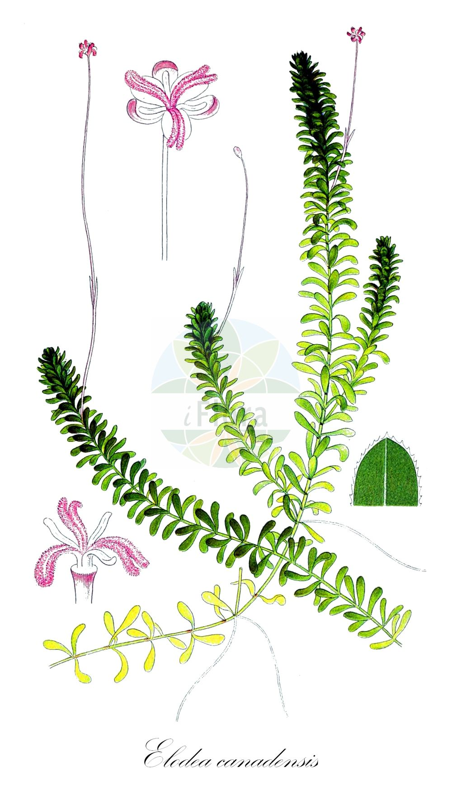

Hydrocharitaceae
Frogbit Family
The Hydrocharitaceae, commonly known as the frogbit family, is a fascinating family of aquatic monocotyledonous flowering plants. It includes about 16 genera and around 135 species found in freshwater and marine environments worldwide. Members range from submerged rooted plants like Vallisneria to free-floating plants like Hydrocharis.
Overview
The Hydrocharitaceae family consists entirely of aquatic herbs, thriving in diverse water bodies from ponds and rivers to estuaries and oceans. Their adaptation to aquatic life is remarkable, showcasing various strategies for survival, reproduction, and dispersal in water. The family includes both freshwater species (like Elodea and Hydrilla) and marine species (seagrasses like Thalassia and Halophila), making it one of the few angiosperm families to successfully colonize marine environments.
These plants play significant ecological roles, providing habitat and food for aquatic animals, oxygenating water, and stabilizing sediments. Some species, like Elodea canadensis, are popular aquarium plants, while others, such as Hydrilla verticillata, have become highly invasive weeds in many parts of the world, causing significant ecological and economic problems.
Economically, besides the aquarium trade, some seagrasses are important for coastal ecosystem health, which indirectly supports fisheries. Research into their unique adaptations, particularly pollination mechanisms (hydrophily), provides valuable insights into plant evolution in aquatic environments.
Quick Facts
- Scientific Name: Hydrocharitaceae
- Common Name: Frogbit family, Tape-grass family
- Number of Genera: Approximately 16
- Number of Species: Approximately 135
- Distribution: Worldwide in freshwater and marine habitats (tropical to temperate)
- Evolutionary Group: Monocots - Alismatales
Key Characteristics
Growth Form and Habit
All members are aquatic herbs, exhibiting diverse habits: submerged (rooted or free-floating), floating-leaved (rooted or free-floating), or emergent. They can be annual or perennial, often reproducing vegetatively via rhizomes, stolons, turions (winter buds), or fragmentation.
Leaves
Leaves are typically simple and highly variable in form depending on the species and habitat. They can be arranged in basal rosettes (e.g., Vallisneria), whorled along stems (e.g., Elodea, Hydrilla), or alternate/opposite. Floating leaves are often ovate to kidney-shaped (e.g., Hydrocharis), while submerged leaves can be linear, ribbon-like, or finely divided. Stipules are generally absent, though intravaginal scales may be present.
Inflorescence
Flowers are often solitary or arranged in cymose inflorescences, typically emerging from a characteristic spathe (a pair of fused or free bracts). The spathe protects the developing flower buds. Inflorescences can be submerged, floating, or emergent depending on the pollination strategy.
Flowers
Flowers are actinomorphic (radially symmetrical) and often unisexual (plants dioecious or monoecious), though bisexual flowers occur in some genera. Key features include:
- Perianth: Typically differentiated into 3 sepals and 3 petals, though petals may be reduced or absent, especially in submerged, water-pollinated species. Petals, when present, are often white or pale.
- Androecium: Stamens vary in number (1 to many), sometimes arranged in multiple whorls.
- Gynoecium: Ovary is inferior, composed of 2-15 fused carpels, forming a single locule with numerous ovules on parietal placentas. Styles are typically branched.
- Pollination: Diverse mechanisms include pollination at the water surface (ephydrophily, e.g., Vallisneria), underwater pollination (hyphydrophily, e.g., Halophila), and insect pollination (entomophily) for emergent or floating flowers (e.g., Hydrocharis).
Fruits and Seeds
The fruit is typically a fleshy, berry-like structure or a capsule that matures underwater and releases seeds by decaying or splitting irregularly. Seeds are numerous, lack endosperm, and are dispersed primarily by water currents (hydrochory).
Chemical Characteristics
Compared to families like Asteraceae or Lamiaceae, Hydrocharitaceae are not generally known for a wide array of prominent secondary metabolites like alkaloids or complex terpenes. Their chemistry often reflects adaptations to aquatic life, such as mechanisms for carbon uptake (e.g., bicarbonate use) and regulation of buoyancy. Some seagrasses produce phenolic compounds, potentially for defense.
Field Identification
Identifying members of the Hydrocharitaceae requires observing their aquatic habitat and specific vegetative and floral features. Here’s what to look for:
Primary Identification Features
- Aquatic Habit: Plants are always found in water (freshwater or marine).
- Spathe: Look for flowers or inflorescences emerging from a pair of bracts (spathe) at the base.
- Flower Structure: Flowers typically 3-merous (3 sepals, often 3 petals), with an inferior ovary. Check if flowers are unisexual or bisexual.
- Leaf Arrangement: Note if leaves are basal, whorled, or alternate/opposite along the stem.
Secondary Identification Features
- Leaf Type: Observe if leaves are submerged, floating, or emergent, and their shape (linear, ovate, dissected).
- Habitat Type: Note whether the environment is freshwater (still or flowing) or marine.
- Vegetative Reproduction: Look for stolons, rhizomes, or turions.
Seasonal Identification Tips
Identification is easiest during the growing season when flowers and mature vegetative structures are present:
- Spring/Summer: Best time for observing flowers and overall growth form. Look for unique pollination events (e.g., detached male flowers of Vallisneria floating on the surface).
- Fall: Fruits may be present, and some species form turions for overwintering.
- Winter: Many temperate species die back or persist as dormant rhizomes or turions. Evergreen species like some Elodea may still be identifiable.
Common Confusion Points
Hydrocharitaceae can be confused with other aquatic monocot families:
- Potamogetonaceae (Pondweed family): Often have stipules fused into a sheath or ligule, flowers typically small, greenish, 4-merous, and borne in emergent spikes with superior ovaries.
- Alismataceae (Water Plantain family): Usually emergent plants with basal leaves, flowers often showy with 3 sepals, 3 petals, and superior ovaries (multiple simple pistils).
- Najadaceae (Naiad or Water Nymph family): Submerged plants with often finely toothed leaves, very reduced unisexual flowers lacking a perianth and borne in leaf axils, superior ovary. (Sometimes included within Hydrocharitaceae).
- Ceratophyllaceae (Hornwort family): Superficially similar submerged plants (e.g., Ceratophyllum) but are dicots with whorled, dichotomously branched leaves and lack true roots.
Field Guide Quick Reference
Look For:
- Aquatic herbs (freshwater or marine)
- Flowers emerging from a spathe
- Flowers often unisexual, 3 sepals, +/- 3 petals
- Inferior ovary
- Leaves basal, whorled, or alternate/opposite
Key Variations:
- Submerged vs. floating vs. emergent habit
- Freshwater vs. marine species
- Pollination mechanisms (water surface, underwater, insect)
- Presence/absence of petals
- Leaf shape (ribbon-like, ovate, linear)
Notable Examples
The Hydrocharitaceae includes well-known aquarium plants, important seagrasses, and some notorious invasive species:

Hydrocharis morsus-ranae
European Frogbit
A free-floating freshwater plant with small, kidney-shaped floating leaves resembling miniature water lilies. It produces stolons and turions. Native to Europe and Asia, but invasive in parts of North America.

Vallisneria spiralis
Tape Grass / Eelgrass
A submerged, rooted freshwater plant with long, ribbon-like basal leaves. Famous for its pollination mechanism where tiny male flowers detach, float to the surface, and pollinate female flowers held at the surface on long, coiled stalks.

Elodea canadensis
Canadian Waterweed
A submerged freshwater plant with stems bearing whorls of small, oblong leaves. Widely used in aquariums and biology labs (for demonstrating photosynthesis). Can be invasive outside its native North American range.

Hydrilla verticillata
Hydrilla
A highly invasive submerged freshwater plant resembling Elodea but often with serrated leaf margins and tubers produced on rhizomes. Forms dense mats that choke waterways. Native to Asia, now widespread globally.

Thalassia testudinum
Turtlegrass
A dominant marine seagrass in the Caribbean and Gulf of Mexico, forming extensive underwater meadows. It has flat, ribbon-like leaves arising from rhizomes and plays a crucial role in coastal ecosystems, stabilizing sediment and providing habitat.

Egeria densa
Large-flowered Waterweed
A submerged freshwater plant native to South America, often confused with Elodea and Hydrilla. It typically has leaves in whorls of 4 or more, denser than Elodea. Popular aquarium plant, but also invasive in many regions.
Phylogeny and Classification
Hydrocharitaceae belongs to the order Alismatales, a basal lineage within the monocots that includes many aquatic and wetland families. It is considered a core family within this order, closely related to other aquatic groups like Potamogetonaceae and Alismataceae. The family's origins likely trace back to the Cretaceous period, with diversification occurring alongside the evolution of other aquatic angiosperms.
Molecular phylogenetic studies have confirmed the monophyly of Hydrocharitaceae (sometimes including Najadaceae) and helped resolve relationships among its genera. The family is often divided into several subfamilies or tribes, reflecting adaptations to different aquatic environments (freshwater vs. marine) and pollination strategies.
Position in Plant Phylogeny
- Kingdom: Plantae
- Clade: Angiosperms (Flowering plants)
- Clade: Monocots
- Order: Alismatales
- Family: Hydrocharitaceae
Evolutionary Significance
The Hydrocharitaceae family is evolutionarily significant for several reasons:
- Adaptation to Aquatic Life: Shows diverse morphological and physiological adaptations for survival in submerged, floating, and marine conditions.
- Pollination Syndromes: Exhibits a remarkable range of pollination mechanisms adapted to water, including surface pollination (ephydrophily) and underwater pollination (hyphydrophily).
- Marine Colonization: One of the few angiosperm families to have successfully invaded and diversified in marine environments (seagrasses).
- Vegetative Propagation: Highly developed strategies for asexual reproduction suited to aquatic habitats.